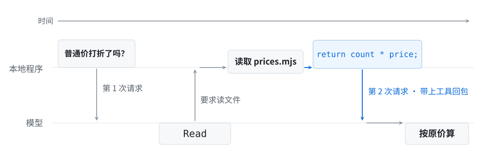

一次查价里的 Agent Loop
问一句“普通价现在打折吗”，屏幕上只跳出“我先看一下价格文件”。模型已经给了回复，里面还有个请程序读取 prices.mjs 的请求。要是程序把这份回复显示出来就收手，用户最后看到的只有一句打算。Agent Loop 得接着把这个打算办成，再把读到的东西交给模型。
第二次请求多带了那行公式
先看模型回应完整时循环怎么转。文件由本地程序打开，读取结果记进会话。模型接着想查别的东西，程序就再转一圈。
while True:
reply = ask_model(messages=session.messages, tools=tools)
session.messages.append(reply.message)
if not reply.tool_calls:
return "complete"
results = execute_tools(reply.tool_calls)
session.messages.extend(results)第一次调 ask_model 时，模型拿着你的问题和工具说明，提出 Read({"path":"prices.mjs"})。第 4 行看见有工具请求，程序才走到第 6 行，在本地读出普通价的 return count * price;。留意第 7 行，接下来发给模型的历史得靠它多出这条读取结果。

假设第 6 行把公式打印在终端，给第 7 行的工具回复里却只写了“读取成功”。你看见了乘法。模型收到的呢？它只知道文件打开了，打没打折还是答不上来。把刚读到的原文放进这条工具回复，第 7 行就会把公式连同刚才的读取请求一起留在会话里。
这次带着公式再问，模型就有依据答“普通价按原价算”。回归测试直接核对第二次请求。它让模拟读取处理器收到 a.txt 后返回一行带行号的 code，然后断言请求末尾同时带着原调用编号 call-1 和那行原文。文件如果搬走，同一个位置就交回“文件没找到”，模型可以接着搜索，或者向用户确认路径。工具结果进入下一次请求的断言
主循环在哪一步交回控制
你只按了一次回车，模型却被问了两次。在若存里，从主代理接手这条输入，到这次 run_turn 返回、把控制权交还给调度程序，算一个回合（turn）。中间请求工具、读取文件、再问模型，都还属于这次处理。
有意思的是，程序里没有一行代码专门检查“乘法公式有没有折扣”。那它怎么知道刚才该继续、现在该停？看主循环处理完整、有效响应的这几行。calls 是从本次模型响应里解析出来的工具请求，assistant 是准备存入会话的模型消息。
if saved_calls:
assistant["tool_calls"] = saved_calls
session.messages.append(assistant)
await save()
if not calls:
return TurnResult("complete")真正让循环收尾的是 if not calls。刚才只有第二次回复走到这里时 calls 为空，程序保存答复后才返回 complete。第一次已经存过模型的消息，还要继续读文件。查看主循环与工具结果的保存位置（第 414–436 行）
这一行有个容易看漏的地方。文件真找不到时，模型也可以只回“请告诉我计价文件在哪”。这时没有下一件要执行的动作，回合照样收尾。「程序可以正常交回控制，用户要的结果还得看答复里的证据。」查价等的是文件路径，接下来的改价要等的又是另一份证据。
这个判断有个前提，模型得把这次响应说完。如果网络在“请告诉我计价文……”处断开，屏幕上同样没出现新的工具名，若存会保留已经收到的文字，报告本轮失败。服务端若声称已经完成，文字和调用却都为空，程序会有限次重试。检查完这些情况，上面的 if not calls 才有意义。查看部分响应和空响应的处理（第 348–356、388–404 行）
反过来，假如模型每次都提出“再读一次”，正常结束的条件就一直不会成立。CoreCoder 把模型调用放进默认最多 50 轮的 for 循环，走到上限便交还控制权。若存默认不限轮数，由用户决定何时取消，长一点的任务可以继续。要让重复读取自动停住，可以显式设上限，程序会在工具批之间检查。这个选择也意味着，任务走到一半用完轮数，就得把进度交还给用户再决定要不要继续。所以同样看到助手停下来，还得看它交回来的是回答、取消状态，还是轮数上限提示。CoreCoder 对循环上限的解释
文件改好了，订单会收多少钱？
现在你又说：“把普通价改成九折，会员价保持原样。”这是一条新输入，新回合开始了。模型可以先请求读文件，再请 Edit 把普通价函数改成 return count * price * 0.9;。收到修改成功的反馈后，它面前有两个都走得通的选择。直接答“改好了”，主循环就收尾。请求运行一次价格检查，主循环就再走一圈。该不该多走这一圈，取决于现在手里的结果够不够回答你。
取 2 件单价 100 元的商品。在这个示例文件里直接调用两个计价函数，实际算出的普通价是 180 元，会员价是 200 元。修改工具的成功回报说明那行新公式已经写入文件。这两个数又说明，给定同一笔输入，两个函数各算出了什么。如果要答的是“顾客在订单预览里会付多少钱”，还差一次从预览入口发起的检查。页面倘若仍调用旧的计价函数，刚才那两项小测仍然可以通过。
假设你接着运行订单预览，终端里普通顾客的价格仍是 200 元，助手却随后告诉你“已经是 180 元”。现在能断定模型忽略了检查结果吗？
展开排查思路
调出发给模型的下一次请求，用预览工具的调用编号 tool_call_id 查这次结果是否也被带了进去。若找不到返回 200 元的那条消息，模型手里最新的价格就仍是函数算出的 180 元，先修工具结果交给主循环的那一步。若能找到，再去追模型为什么仍报 180 元。两种情况都要沿预览入口查清楚，页面究竟走了哪条计价路径。查看若存如何为工具回复标记调用编号（第 80–84 行）
这一章带走什么
模型请程序读文件，程序得把读到的原文带进下一次请求，模型才有依据接着答。等它交回完整答复，也没再要工具，这一轮就收尾。可要是它说预览收 180 元，页面还是 200 元，改价就得顺着订单入口再查。
第一次 Read 还没发起时，模型怎么知道该找哪个文件？
面经自测
用一次工具调用讲一下你的 Agent Loop。
科大讯飞 · 一面 · 面经原帖 · 题意转述
展开参考回答
模型先根据手头的信息决定要不要用工具。需要工具时，程序在本地执行，把真实结果随下一次请求发回模型。模型可以再提出行动，也可以给出最终回答。
查普通价时，第一次请求换来“请读价格文件”；程序读出计价公式，第二次请求才让模型有依据说“还没有打折”。这两次请求属于同一个用户回合。
用户只说了一句，谁负责让模型继续下一步？
字节跳动 · 一面 · 面经原帖 · 题意转述
展开参考回答
负责继续的是管理这次任务的程序。它收到工具请求，就执行并保存结果，再带着结果请求模型。用户无需为每次读取再发一句“继续”。
你的 Agent 怎么判断循环该停了？
科大讯飞 · 一面 · 面经原帖 · 题意转述
展开参考回答
在这里的正常路径上，模型给出完整回答且没有待执行的工具请求，程序就结束本轮。用户要求改代码时，还要另看改完的行为有没有经过核对。
工具调用失败时，你怎么处理？
JR（作者匿名代称） · AI 开发 · 面经原帖 · 题意转述
展开参考回答
先把实际失败原因送回模型。比如文件没找到，下一轮可以核对目录或请用户补充路径。不能把一次失败当成已经拿到文件内容。
查价时模型请求了两次，这算几个 turn？
若存设计题
展开参考回答
程序把价格打印在终端里，却把旧历史原样发回模型，模型还缺什么？
若存设计题
展开参考回答
改价任务已经退出循环，还要核对什么才敢交付？
若存设计题